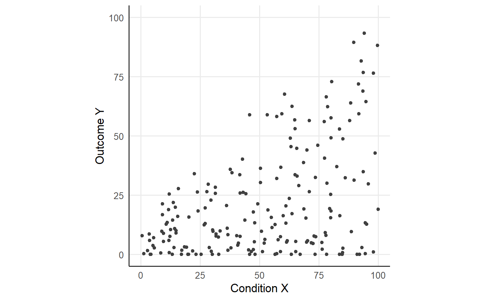

1 Necessity as attainability of an outcome target
A necessity claim asserts that an outcome target is unattainable below some level of a condition. A condition X is necessary for an outcome target y when no case reaches Y >= y below a required level of X (Dul 2016, 2020). The claim is asymmetric, because a case may hold the required level of the condition and still miss the target when other constraints hold the outcome down (Braumoeller and Goertz 2000; Goertz and Starr 2003).
The asymmetry gives a necessity claim a distinct signature in a scatter plot of the condition against the outcome. Cases with a low condition and a high outcome contradict the claim, and the upper-left corner of the scatter is therefore empty (Dul 2016). Cases with a high condition and a low outcome agree with the claim, because a necessary condition permits failure above the requirement. Accounts of necessary conditions in set-theoretic methods describe the same asymmetry as a subset relation of the outcome to the condition (Ragin 2008; Schneider and Wagemann 2012).
The guide uses the synthetic dataset of 200 cases of the qnca repository, whose condition and outcome lie on a scale from 0 to 100.
library(qnca)
d <- read.csv("https://raw.githubusercontent.com/MarekDejaUJ/qnca/main/data/qnca_dataset_n200.csv")
summary(d)
#> X Y
#> Min. : 0.543 Min. : 0.000
#> 1st Qu.:27.625 1st Qu.: 4.449
#> Median :54.229 Median :13.138
#> Mean :51.528 Mean :21.123
#> 3rd Qu.:76.288 3rd Qu.:32.128
#> Max. :99.910 Max. :93.368The scatter of the 200 cases shows the reverse-L pattern of a necessary condition: the cases fill the lower-right triangle, and the upper-left corner holds no case.
ggplot(d, aes(X, Y)) +
geom_point(size = 1.2, colour = "grey25") +
coord_equal(xlim = c(0, 100), ylim = c(0, 100)) +
labs(x = "Condition X", y = "Outcome Y")
Figure 1.1: The 200 cases of the synthetic dataset. The upper-left corner, with a low condition and a high outcome, holds no case.
1.1 The strict requirement of a target
For a target y, the strict requirement is the lowest condition value among the cases that reach the target. The requirement for the target 50 follows from the cases with Y >= 50.
min(d$X[d$Y >= 50])
#> [1] 45.85481
qnca_frontier(d$X, d$Y, pi = 1, y_grid = 50)
#> [1] 45.85481Both lines give the same value, because the QNCA frontier at the tolerance pi = 1 is the lowest condition value among the successful cases. The value is the CE-FDH ceiling of NCA at the target 50 (Dul 2016). Every case with Y >= 50 holds at least the required level of X, and the strict requirement rests on the single case with the lowest condition value among the successful cases.
1.2 A requirement with a stated tolerance
Quantile Necessary Condition Analysis (QNCA) reports a low quantile of the condition among the successful cases (Deja 2026b). The tolerance pi fixes the share 1 - pi of the successful cases that may sit below the reported requirement. The requirement for the target 50 at pi = 0.95 admits five percent of the successful cases below the reported level.
req <- qnca_frontier(d$X, d$Y, pi = 0.95, y_grid = 50)
req
#> [1] 53.27223
attain <- d$Y >= 50
c(successful = sum(attain), below = sum(d$X[attain] < req))
#> successful below
#> 27 1The tolerant requirement lies above the strict requirement, and the cases below the tolerant requirement form a small share of the successful cases. At the target 50, the share of successful cases below the requirement stays within the tolerance 1 - pi. The reading of the requirement changes with the tolerance: at pi = 1 the requirement marks the lowest observed success, and at pi = 0.95 the requirement marks a level that at least ninety-five percent of the successful cases reach.
1.3 The same call in Python and Julia
The Python package qnca and the Julia package QuantileNecessity compute the same requirements on the same data.
from urllib.request import urlopen
import numpy as np
from qnca import qnca_frontier
url = "https://raw.githubusercontent.com/MarekDejaUJ/qnca/main/data/qnca_dataset_n200.csv"
X, Y = np.loadtxt(urlopen(url), delimiter=",", skiprows=1, unpack=True)
print(qnca_frontier(X, Y, pi=1.0, y_grid=np.array([50.0])))
print(qnca_frontier(X, Y, pi=0.95, y_grid=np.array([50.0])))
#> [45.85480818]
#> [53.27222761]using QuantileNecessity, Downloads, DelimitedFiles
url = "https://raw.githubusercontent.com/MarekDejaUJ/qnca/main/data/qnca_dataset_n200.csv"
data = readdlm(Downloads.download(url), ',', Float64; skipstart = 1)
X, Y = data[:, 1], data[:, 2]
println(qnca_frontier(X, Y, 1.0, [50.0]))
println(qnca_frontier(X, Y, 0.95, [50.0]))
#> [45.85480817985511]
#> [53.27222760657402]A necessity claim stays a claim about attainability. A requirement above the observed level of a case predicts failure of the case at the target, and a requirement below the observed level of a case leaves the outcome of the case to the other conditions of the outcome (Dul 2016).